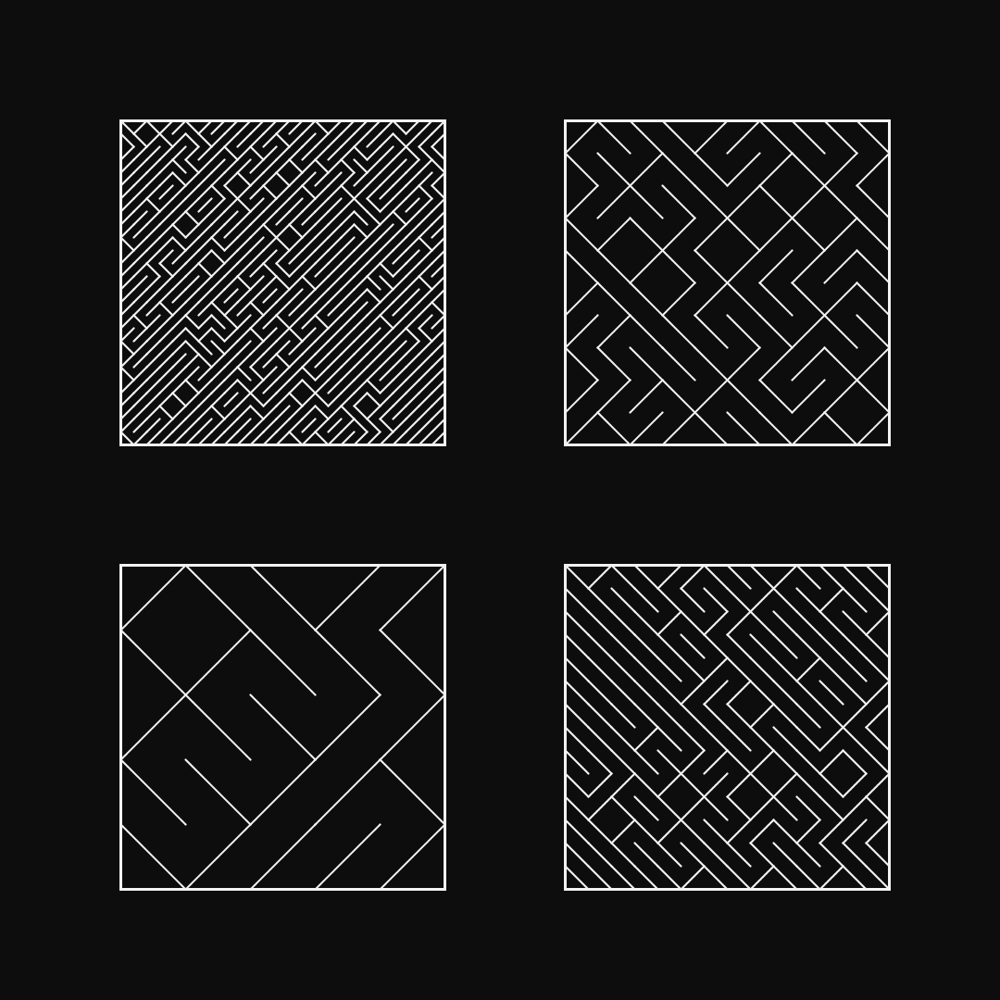
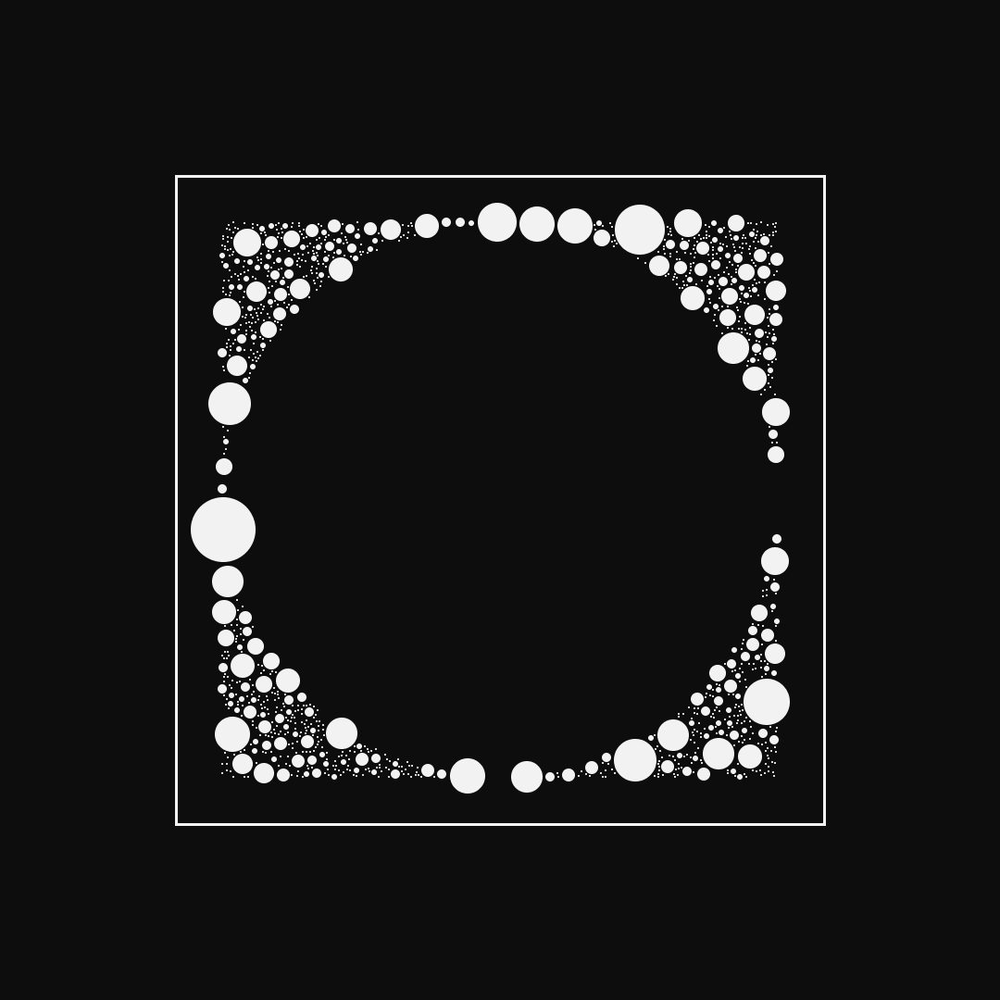
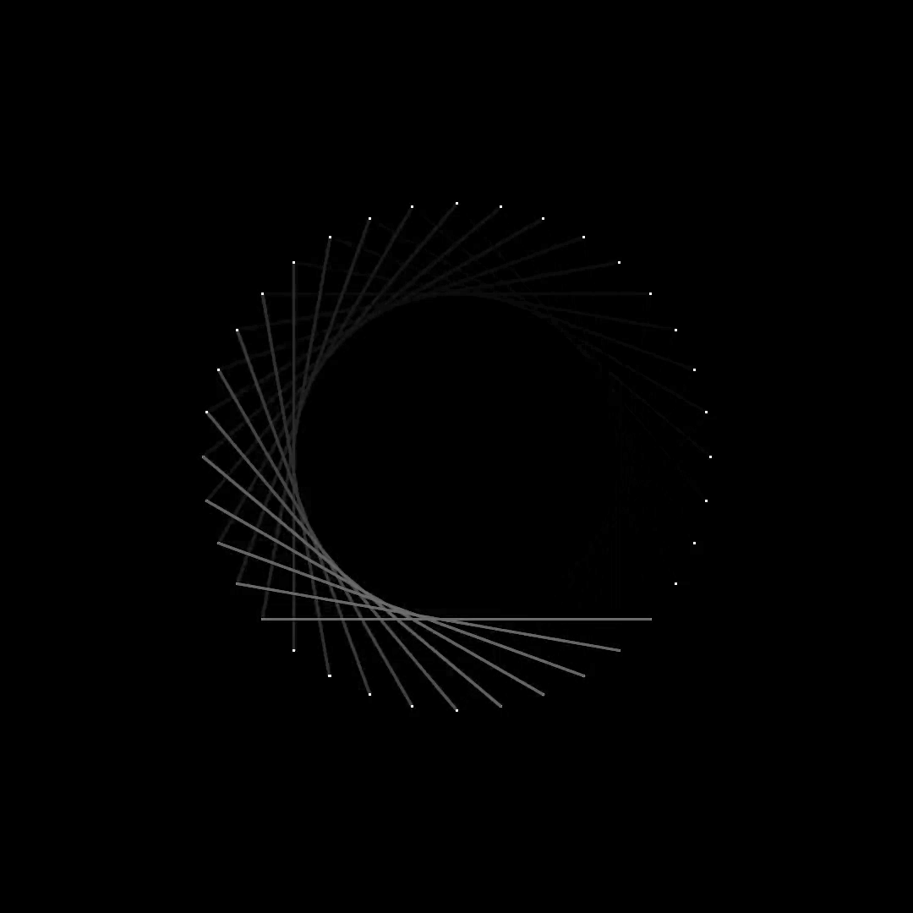

100 Days of Generative Art
Skills
Processing
Time
May 2021 - Sept 2021
Contributions
Learned and created generative artworks with Processing.
Context
//01In the spring semester of 2021, I learned Processing during one of my courses. Nearing the end, I discovered the possibilities of generative artwork made with code. I thought, "Hey! This is pretty cool... how?" and thus began my journey into generative coding.
Process
//02I first started with finding inspiration and tutorials to jumpstart my journey.
One of my most referenced resources is The Coding Train who has released the popular book, The Nature of Code. I also found inspiration from OpenProcessing. Other resources have been referenced in the relevant posts on my Instagram.
I started off with tutorials to gain a more in-depth idea about how generative coding was different from the game-oriented coding I learned in my course.

Being relatively new to the world of coding, I didn't have a thorough understanding of why or how the code achieved certain results. However, for each project I did, I experimented and changed as much properties as I could, observing how one aspect would affect the final result.
Reflection
//03Over the course of the ~5 month project, I was able to learn a new skill and creative inspiration. It gave me a sense of reward, knowing that I could persevere and accomplish something like this. I was also able to work out my brain which had been dormant for a little while.
Check out my work!